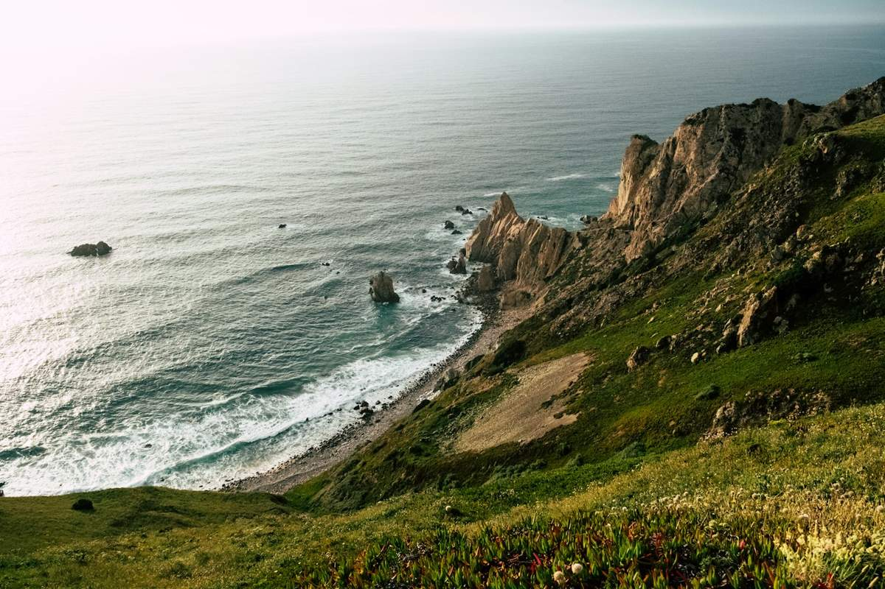

Lisbona, il primo incontro
Due giornate dedicate alla città, ai suoi quartieri e alle atmosfere che invitano a fermarsi.

CLICK&VIAGGIA / PORTOGALLO
Le strade di Lisbona, la luce di Sintra, il respiro dell’Atlantico. Un percorso che invita a cambiare ritmo e a lasciarsi sorprendere.
L’ESPERIENZA
C’è un Portogallo che si scopre camminando: nei quartieri che si aprono su una piazza, nelle pause davanti a un panorama, nelle strade che portano verso il mare. Questa idea di viaggio unisce l’energia della città alla libertà della costa.
Il percorso proposto lascia spazio alla scoperta e al tempo personale. È il punto di partenza per costruire insieme un’esperienza che rispecchi il tuo modo di viaggiare, dalla prima giornata a Lisbona alle soste sull’Atlantico.
IL FILO DEL VIAGGIO
Questa è una traccia illustrativa: date, servizi e organizzazione saranno definiti prima di confermare il viaggio. Le fotografie raccontano la destinazione e non identificano servizi inclusi.
Due giornate dedicate alla città, ai suoi quartieri e alle atmosfere che invitano a fermarsi.
Un cambio di prospettiva tra paesaggi, percorsi panoramici e il richiamo dell’Atlantico.
Una parte finale da definire sulla costa, con soste e momenti liberi da concordare.
PARLIAMO DELLA TUA PROSSIMA PARTENZA
Raccontaci cosa cerchi, con chi vorresti partire e quali momenti vuoi vivere.
Un appuntamento con il team è il primo passo per valutare il percorso e le possibilità disponibili.
Un incontro informativo, prima di qualsiasi decisione.